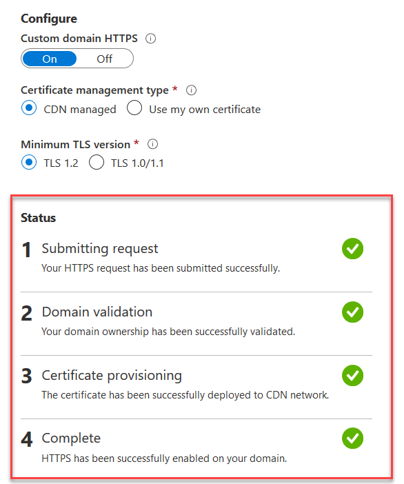
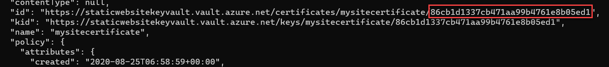

Static websites are getting more popular again with the increased using of Single Page Applications (SPA). They are a cheaper alternative to dynamic websites which need a backend. In the simplest form, they are more secure as there is no backend code. However, they could be fully-fledged websites which use JavaScript for client-side scripting and communicating with the backend using API and serverless architecture.
Many free or low-cost static hosting options are available such as Github Pages , Amazon AWS and Azure. In this article, I'm going to show you how to host your static website in Azure Storage.
Before we start, you need to have an active Azure account. I'm going to use Azure CLI to provision resources in Azure so if you don't have it installed on your machine install it from the Microsoft website.
Verify your Azure CLI works by running az command in your terminal. Login to your account using
az login and if you have
multiple subscriptions on your account select the subscription you want to use for this tutorial:
1. Get the list of all your subscriptions and confirm if you want to continue with the default subscription:
az account list --output table
2. If you want to change you default subscription, use the following command with the subscription ID you want to switch to:
az account set --subscription SUBSCRIPTION_ID
Note that some of the services we are going to create in this tutorial incur charges to your account. Remember to clean up your resources when you're done.
The first item we're going to create is a resource group so we can put all the resources in it. It helps us with the clean up as well since everything will be deleted when the resource group is deleted. Create a resource group using the following command:
If you are using Powershell you need to replace "\" with "`" for multiline
commands:
az group create \ --location australiaeast \ --name staticwebsite-rg
Now, create a storage account which we are going to use for storing website assets. Run the following command to create it in your resource group:
az storage account create \ --name soheilstorage \ --resource-group staticwebsite-rg \ --location australiaeast \ --sku Standard_LRS
Azure storage by default doesn't serve your HTML files as a website. You need to enable this feature in your
blob
storage and specify index and error pages:
az storage blob service-properties update \ --account-name soheilstorage \ --static-website \ --404-document error.html \ --index-document index.html
It'll create a container called $web in your blob container so you can upload your
index.html and error.html
files. For uploading your website you can use Azure portal,
Storage Explorer
or CLI command.
I'm going to use Azure CLI to upload the content of my current terminal folder to blob storage using the following command:
az storage blob upload-batch \ --account-name soheilstorage \ --source . \ --destination '$web'
You can find the public URL of your website using the following command. Navigating to that URL would take to your website homepage.
az storage account show \ --name soheilstorage \ --resource-group staticwebsite-rg \ --query "primaryEndpoints.web" \ --output tsv
As you saw, hosting your static website in Azure Storage is easy and straight forward. If you're happy to work with the Azure subdomain, you are done here and you can continue using it which supports HTTPS as well. But if you want to use your own domain name and map it to the storage account you need to take some extra steps which I'm going to elaborate on this section.
You can map a custom domain to your static website in Azure using Storage Account or Azure Content Delivery Network (CDN).
Mapping a custom domain using storage account is easier but at the moment it only supports HTTP. I highly recommend against this approach unless you are aware of the risks of not using HTTPS and you want to take them. I'm not going to cover this approach but your can find the instructions in the Microsoft website.
In this section I'm going to show you how to map a custom domain to your storage account using Azure CDN.
In this approach instead of hitting the storage account directly, requests get served from the CDN which caches contents from your table storage. It allows you to configure TLS/SSL certificates and, it supports rewrite rules. CDN caching has also great improvement on your website response time for static assets.For creating CDN service in Azure you need two components: Azure CDN Profile and Azure CDN Endpoint.
There are different types of CDNs available in Azure and pricing and features for each product is different. In this tutorial, we'll use "Standard Microsoft CDN". You can compare different CDN products on the Microsoft website. With a CDN profile we define the type of CDN we want to use.
Run the following command to create a CDN Profile:
az cdn profile create \ --resource-group staticwebsite-rg \ --name staticwebsitecdn \ --sku Standard_Microsoft
And for using this CDN we need to have an endpoint which points to our website. Create the endpoint and set the origin to your storage URL:
az cdn endpoint create \ --resource-group staticwebsite-rg \ --name staticwebsitecdnendpoint \ --profile-name staticwebsitecdn \ --origin soheilstorage.z8.web.core.windows.net \ --origin-host-header soheilstorage.z8.web.core.windows.net
Note that you need to set origin-host-header same as your origin which is your storage
static
website otherwise Azure CDN returns a 400 response.
Now you should be able to access your website through CDN. However, CDN endpoint needs to cache your website content in different regions and this might take some time. You'll get a 404 response If you visit CDN URL immediately after you've created the endpoint so wait until propagation is finished.
For getting the CDN endpoint URL use the following command:
az cdn endpoint show \ --resource-group staticwebsite-rg \ --profile-name staticwebsitecdn \ --name staticwebsitecdnendpoint
host name is your CDN endpoint URL.
Before you add your custom domain to your CDN, Azure needs to know that you own the domain. To do that you need to create a canonical name (CNAME) record with your domain provider to point to your CDN endpoint. When you try to map a custom domain to your CDN, Azure will query your domain and verifies there is a CNAME record which points to the current CDN endpoint you are trying to add a custom domain to.
This approach works great if you want to add a custom subdomain like blog.soheilvaseghi.com or
www.soheilvaseghi.com but you won't be able to add CNAME for your apex zone or root domain
(soheilvaseghi.com).
Adding a CNAME record to the apex zone will create a broken zone and cause DNS resolution failure.
You cannot also use A or AAAA DNS entries since they only accept IP addresses and
Azure
cannot use IP for
verifying your domain ownership.
To resolve this issue, Azure has suggested adding a temporary subdomain (cdnverify) which you
can use
for mapping
root domains to Azure CDN. In this scenario when you map your custom root domain to the CDN, Azure will
query
cdnverify.yourdomain.com and if that entry exists and it points to the current endpoint, then
it'll
add the custom domain.
So the first step is to decide if you want to use a subdomain or root domain for your website. If you want to use a subdomain, simply add it to your domain registrar DNS and resolve it to your CDN endpoint URL. I've used the following entry for my blog subdomain:
TYPE: CNAME HOST: blog.soheilvaseghi.com ANSWER: staticwebsitecdnendpoint.azureedge.net
And if you want to use your root domain add cdnverify.yourdomain.com to your DNS list. I've
used the
following
entry to map my root domain:
TYPE: CNAME HOST: cdnverify.soheilvaseghi.com ANSWER: staticwebsitecdnendpoint.azureedge.net
Note that the URL these records are pointing to is the CDN endpoint, not your table storage.
It might take a while to propagate your DNS to name servers. You can check if your DNS has been propagated
using
whatsmydns
website or nslookup command:
nslookup blog.soheilvaseghi.com
Next you need to add a custom domain to your CDN by running the following command:
az cdn custom-domain create \ --resource-group staticwebsite-rg \ --endpoint-name staticwebsitecdnendpoint \ --profile-name staticwebsitecdn \ --name blog \ --hostname blog.soheilvaseghi.com
Once completed, after a few seconds you should be able to navigate to your website using your custom domain.
Using HTTPS guarantees that data transfer between the client and server (CDN) is encrypted and secure. There are two approaches for enabling HTTPS on your custom domain: CDN managed certificate and using your own certificate.
If you let CDN manage the certificate for you, Azure takes care of everything including provisioning a new certificate for you from one of the Certificate Authorities (CA). However, this approach only works for non-root domains. So only if your custom domain is a subdomain of your website you can use this approach.
For enabling HTTPS for your custom subdomain run the following command:
az cdn custom-domain enable-https \ --endpoint-name staticwebsitecdnendpoint \ --name blog \ --profile-name staticwebsitecdn \ --resource-group staticwebsite-rg
Note if you get InvalidResource - The resource format is invalid. error after running the
above
command,
that's
because of a bug in older Azure CLI versions and you need to update your Azure CLI.
In this approach, Azure validates your domain using the same CNAME you've entered before. If it couldn't find the CNAME it'll send an email to one of your domains admin email addresses and you'll need to confirm domain ownership by verifying that email. Once the domain ownership is verified, it provisions a certificate for you and also renews that once the certificate is going to expire. This process may take up to a few hours. You can see the progress by navigating to your CDN endpoint custom domain in Azure portal.

Once all the steps in you Azure portal got the green tick, your custom subdomain should be protected by TLS. In the next step, we'll see how to enable HTTPS for the root domains.
This approach works for both root domains and subdomains. However, since it's more complex compared to the CDN managed method and you need to renew your certificate manually, I recommend using the CDN managed method if you are going to use a subdomain. Use this method only if you want your website to be accessible by your root domain.
In this approach, you need to bring your own certificate hence you need to have access to your certificate files. Azure needs you to store your certificate in a Key Vault so CDN can access your certificate securely. Note that Azure CDN from Microsoft only supports a subset of CAs. If your certificate is not from one of these CAs you should use Azure CDN from Verizon which supports any valid CA.
Run the following command to create an Azure Key Vault for storing your credentials:
az keyvault create \ --location australiaeast \ --name staticwebsitekeyvault \ --resource-group staticwebsite-rg
Note that the Key Vault should be in the same resource group as your CDN Profile and CDN endpoint.
You should grant CDN access to your Key Vault. To do that you need to be a global or application administrator in your account. First step is to register Azure CDN as an app in your Azure Active Directory using the following command:
az ad sp create \ --id "205478c0-bd83-4e1b-a9d6-db63a3e1e1c8"
And grant access to your Key Vault by:
az keyvault set-policy \
--name staticwebsitekeyvault \
--spn {NAME_OF_SERVICE_PRINCIPAL} \
--secret-permissions get
Now, Azure CDN can get certificates from your Key Vault. You need to push your certificate to your Key Vault. Make sure to include all intermediate certificates as well as your private key in one file. Use the following command to import your certificate to the Key Vault:
az keyvault certificate import \ --file cert.pem \ --name mysitecertificate \ --vault-name staticwebsitekeyvault
You'll need your certificate secret version which you can find in the response of the previous command:

Finally, you can enable HTTPS using your own certificate imported in the Key Vault by running the following command:
az cdn custom-domain enable-https \ --endpoint-name staticwebsitecdnendpoint \ --name blog \ --profile-name staticwebsitecdn \ --resource-group staticwebsite-rg \ --user-cert-vault-name staticwebsitekeyvault \ --user-cert-secret-name mysitecertificate \ --user-cert-secret-version 86cb1d1337cb471aa99b4761e8b05ed1
This process might take a couple of hours. Once finished successfully you should be able to visit your root domain using HTTPS pointing to your static website stored in Azure Storage. In the next step, we'll add a rewrite rule to enforce using HTTPS version of your site.
In this section I'm going to add a rewrite rule to redirects all HTTP requests to the HTTPS version. However, this instruction is for Microsoft Standard CDN and if you've used a different CDN Profile it could be different.
Run the following command to add a rule to your Azure CDN endpoint to redirect HTTP requests to HTTPS:
az cdn endpoint rule add \ --resource-group staticwebsite-rg \ --name staticwebsitecdnendpoint \ --profile-name staticwebsitecdn \ --order 1 \ --rule-name enforceHTTPS \ --match-variable RequestScheme \ --operator Equal \ --match-values HTTP \ --action-name UrlRedirect \ --redirect-protocol Https \ --redirect-type Moved
Note that currently this command is in preview and it may change in future CLI release.
Now if you navigate to the HTTP version of your website, it'll use a 301 response code to
redirect you to the HTTPS version.
When you use CDN you need to be aware that everytime you upload a new file to your storage account, the CDN is not aware of these changes. You have to explicitly tell the CDN to refresh its cache and get the new version of the files. You can specify only the files that's been changed but in the following command I'll purge everything:
az cdn endpoint purge \ --resource-group staticwebsite-rg \ --name staticwebsitecdnendpoint \ --profile-name staticwebsitecdn \ --no-wait \ --content-paths '/'
In this command, we used --no-wait flag so the command returns quickly but behind the scenes,
this
process may take up a few minutes. You have to wait until the CDN cache is refreshed for all the nodes then
you will
be able to see
the changes on your website.
In this article, we saw how to host our static website in Azure Storage which is a cheaper alternative compared to virtual machines or Azure Web App hosting options. It doesn't need any server maintenance and you can focus entirely on your website rather than the infrastructure. However, since currently, Azure Storage doesn't support HTTPS for custom domains, securing your website on your own domain using SSL/TLS involves extra steps for adding a CDN and Key Vault.
If you are going to use a subdomain for your website, the process is fairly straight forward but it becomes more complex if you want to use your root domain since Azure doesn't support automatic certificate provisioning for root domains yet.
In most cases, you'll do this once for your website so it doesn't trouble too much to take some extra steps to host your website.